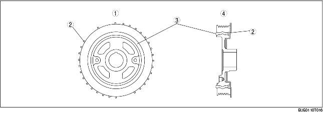

• A crankshaft position (CKP) signal detecting plate has been adopted for the crankshaft pulley.
• A torsional damper, which prevents the crankshaft from wobbling, has also been adopted on the crankshaft.

.